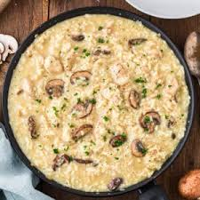

Chicken Risotto
Home

Description
This is a recipe for brown rice chicken risotto. It includes mostly
healthy ingredients besides the parmesan cheese and olive oil. These
are in small amounts per serving.
This dish can be fairly time consuming to make and it does not allow the
cook to be away from the dish while it is cooking. Constant stirring is
required to prevent the rice and other ingredients from sticking to the
pot and scorching.
However, it keeps if refrigerated for over a week and maintains its flavor.
It is also healthy and is made with all natural ingredients*
(cheese will likely not be but recipe calls for very little). The brown
rice also is good for controlling blood sugar spikes when compared to white
rice. The inclusion of mushrooms and vegetables help round out this meal and
make it more nutritionally balanced. Additionally, once the cook learns
to recognize the cues that each step in the recipe is finished the taste
and texture can and will improve dramatically compared to early attempts
This recipe also uses bagged pre grilled or roasted chicken. This is
because this recipe is used by the creator as a meal prep and not having
to worry about preparing the meat greatly speeds up the preparation.
Anyone following this recipe is welcome to prepare their own meat from
scratch. If doing so please do so before starting any of the steps in
the instructions. Any mention of a specific brand is not strictly
required to successfully prepare this dish. These are only included when
in the creator's opinion one brand is of much better quality than the rest.
Servings 6-8
Ingredients
- 24oz chicken, grilled or roasted
- 2 cups brown rice
- 8 cups swanson brand chicken stock
- 2 yellow squash or 2 zucchinni squash or 1 of each
- 8 oz of baby bella mushrooms sliced
- 1 tbsp of minced garlic
- ~1/4 cup of olive oil
- 1/4 cup of parmesan cheese
Cookware
- Stove
- Large cooking pot with lid
- Small cooking pot at least 10 cups in volume
- Sturdy spatula with flat edge
Steps
- Set your small cooking pot on the stove and set the heat to low.
Pour all 8 cups of chicken stock into the pot.
- Grate or chop your yellow or zucchinni squash and set aside for later.
- Measure out 2 cups of brown rice and set aside for later.
- Place your large cooking pot on the stove and set the heat to medium
- Add all the sliced baby bella mushrooms to the large pot as well as
enough olive oil to cover all and saute. The mushrooms will soak up
the olive oil but release it again when cooked enough.
- Add all 2 cups of brown rice to the large pot. Stir continuously
until the rice becomes partially transparent. This usually
happens after 2-3 minutes.
- Add approximately 1/3 of the broth in the small pot into the large
pot. Stir until all ingredients in the large pot are thoroughly
mixed.
- Add 1 tbsp of minced garlic and stir until mixed
- Place the top on the large pot and wait several minutes.
Check periodically to see how much chicken stock the rice has absorbed
and stir each time you check. After most of the stock has been
absorbed. The rice on top will be completely exposed in this case.
Add enough stock to cover all the rice and stir to mix.
- Repeat the previous step until about 1/3 of the stock in the small pot
remains.
- Add enough stock to cover the rice in the large pot. If already
covered then do not add more. Add all 24oz of chicken into the large
pot and stir to mix thoroughly.
- Repeat step 9 until all the stock in the small pot is gone.
- At this point you will have to worry about the rice sticking to the
bottom of the large pot. When you stir make sure to scrape the entire
bottom surface with the straight side of your spatula. If you hear
the rice at the bottom of the pot when you then it is starting to stick
and continuous stirring is required until the dish is completed. If
no noise is heard then wait ~2 minutes before stirring again.
- Once most of the stock in the large pot is absorbed add all the
grated or chopped yellow or zucchinni squash to the large pot. Stir
and mix thoroughly but do not forget to keep scraping the bottom as
you mix.
- Keep stirring until almost all the stock in the pot is absorbed.
The risotto in the pot will become noticibly thicker as the free
stock is absorbed or evaporates. Once the stock is absorbed move the
pot to an unused stove coil and turn off the stove.
- Wait ~1-2 minutes for the risotto to cool down and then add the
1/4 cup of parmesan cheese. Stir and mix thoroughly.
- The dish is now complete.